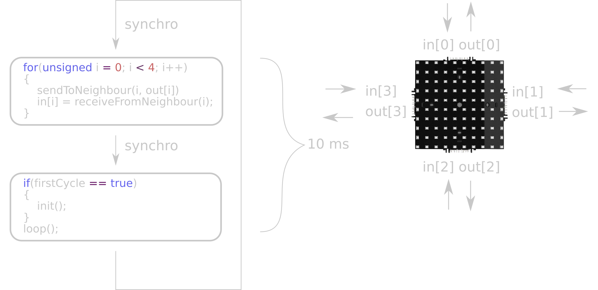
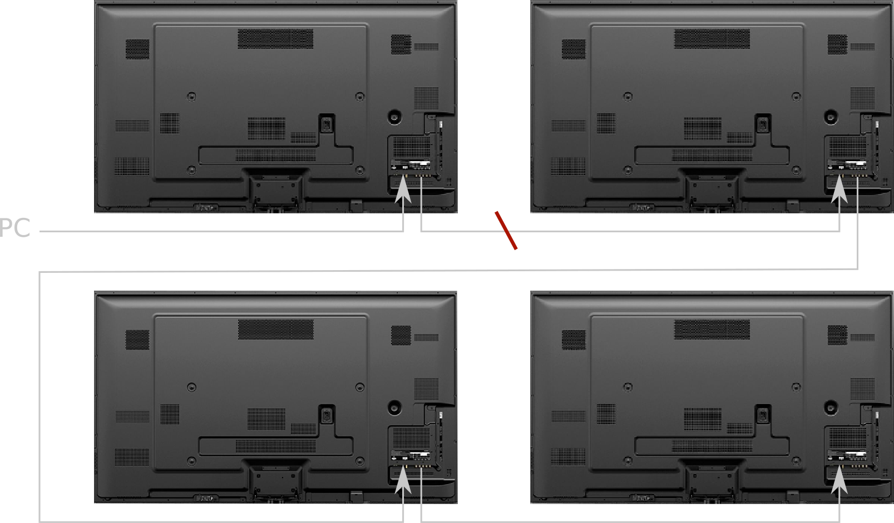

La première dalle LED Intelligente et Connectée
La première dalle LED Intelligente et Connectée
Exposition MP2013
SquareWave
Jeu de la vie
Init Run Step StopAutomate Interne
Comparaison avec l'existant
Comparaison avec l'existant
Comparaison avec l'existant
Calcul de Coordonnées
Init Root Run Step StopCalcul de Coordonnées: Code
// État
int x;
int y;
bool ok; // Programme
void init() { if(relay) {
x = 0;
y = 0;
ok = false;
}
else
state = false; }
void loop() { if (in[DOWN].ok == true && ok == false) {
x = in[DOWN].x ;
y = in[DOWN].y + 1;
ok = vrai;
} else if (in[LEFT].ok == true && ok == false) {
x = in[LEFT].x + 1;
y = in[LEFT].y;
ok = true;
}
else if (in[UP].ok == true && ok == false) {
x = in[UP].x;
y = in[UP] - 1;
ok = true;
}
else if (in[RIGHT].ok == true && ok == false) {
x = in[RIGHT].x - 1;
y = in[RIGHT].y;
ok = true;
} for(unsigned i = 0; i < 4; i++) {
out[i].x = x;
out[i].y = y;
out[i].ok = ok;
} } Arbre Couvrant
Init Root Run Step Stop BroadcastArbre Couvrant: Code
// État interne
int distance;
int father;
bool children[4]; // État pour les voisins
int distance;
bool father; // Programme
void init() { if(relay == true)
distance = 0;
else
distance = -1;
father = -1;
for(unsigned i = 0; i < 4; i++)
children[i] = false;}
void loop() { if(relay == false) { for(unsigned i = 0; i < 4; i++) {
if(in[i].distance != -1) {
father = i;
distance = in[i].distance + 1;
}
if(in[i].father == true)
children[i] = true;
else
children[i] = false;
} } for(unsigned i = 0; i < 4; i++) {
if(father == true)
out[i].father = true;
else
out[i].father = faux;
out[i].distance = distance;
} }